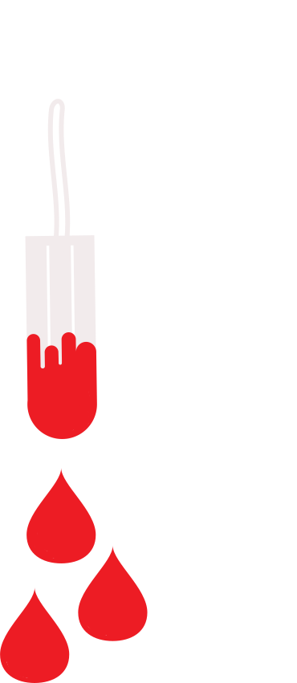
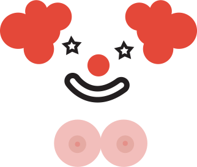

DENDROPHILIA
Dendrophilia (translation: "love of trees") describes a fetish for trees. Individuals may become aroused from simply being near a tree, or take the fetish to the next level by engaging in sex acts with trees.

AUTONEPIOPHILIA
Adult babies are those individuals that enjoy being a baby again. They may enjoy regressing partially or completely, participating in the act of wearing diapers, being fed by an adult, sucking on a baby bottle or pacifier, dressing up in baby clothes, crawling instead of walking and speaking in “baby” talk. Individuals interested in infantilism most likely enjoy the nurturing aspect. They may be seeking attention or have too many responsibilities in their daily lives, which they wish to escape from.

FORMICOPHILIA
Formicophilia is a form of zoophilia in which a person is turned on by having insects crawl upon or nibble on them. This often involves the purposeful application of insects to the body or genitals. The desired effect may be a tickling sensation, or the infliction of psychological distress upon another person.

OCULOLINCTUS
Also known as “worming”, oculolinctus involves getting erotic pleasure from licking someone’s eyeball. It was considered to be a well known method of expressing affection or inciting full sexual confidence in Japan. Rumors started circulating that doctors were warning of significant perils of virus conjunctivitis, other eye infections, as well as blindness

MENOPHILIA
Most men find vaginal bleeding to be revolting and utterly unsexy, but there are a few on the other end of the spectrum. These blood lovers just might be the closest things we have to real vampires, as they love to suck on tampons and lick maxi pads. While there are a handful of women who have this fetish, the majority of menstruation lovers are men, since they don't make their own vaginal blood. There isn't much more to say about these guys other than yes, they really do exist (despite a limited amount of credible research on the paraphilia), and no, that's not sanitary.

URSUSAGALMATOPHILIA
A sexual fetish whereby an individual is sexually aroused by or interested in dressing up as animals. These individuals call themselves ‘plushies’ or ‘furries’. Ursusagalmatophilia is sometimes confused with, but is distinct from zoophilia, which is a fetish for live animals.

DACRYPHILIA
Being turned on by tears. The term covers all forms of pleasure from the tears of others. The arousal is achieved when viewing a person in emotional distress. It carries the theme where a person (often a Top in a BDSM relationship) induces another (the bottom) to cry, or otherwise show a strong emotion.

ACROTOMOP
The love of (or sexual attraction to) amputees. It is a fetish focused on amputations, generally of limbs. There are two subtypes of this fetish. Acrotomophilia is an intense desire for one's partner to be an amputee. Acrotomophiles are also known as "devotees." Apotemnophilia is an intense desire to be an amputee. Aptemnophiles are also known as "wannabes."

COULROPHILIA
Coulrophilia is the paraphilia involving sexual attraction to clowns, mimes and jesters. The most likely reason behind this is because of lack of childhood, but some say the attraction is because the person behind the face paint could be anybody that you may or may not know.

TRIPSOLAGNIA
Tripsolagnia refers to sexual urges or arousal associated with having one's hair shampooed by someone else.